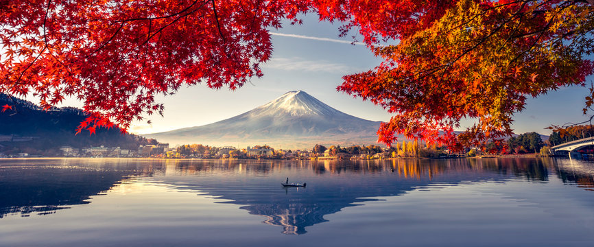

Фотографія дозволяє зупинити час і зберегти унікальні моменти життя.
Це не просто кнопка на камері, а справжнє мистецтво бачити світ по-іншому.
Я почав займатися цим хобі кілька років тому. Найбільше мене приваблює пейзажна та вулична зйомка, де кожен кадр розповідає свою історію.
Натисніть кнопку нижче, щоб дізнатися більше фактів.

Дізнатися більше про основи фотографії можна на Вікіпедії.